此為紀錄筆者在工作上，碰到公司需要建置新的私有本地NPM Server 操作筆記，在Windows 10下使用Verdaccio並搭配Docker來建置環境。
關於Docker安裝過程省略，直接進行Container服務操作。
docker pull verdaccio/verdaccio
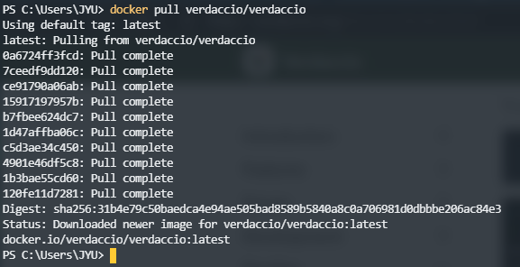
可以透過以下指令查看下載的Image
docker images
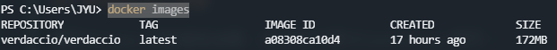
可以看到Image名為verdaccio/verdaccio，並且Tag為latest，在運行Container指定的images來源正確名稱為verdaccio/verdaccio:latest。
官方預設運行指令
docker run -it --rm --name verdaccio -p 4873:4873 verdaccio/verdaccio
-p 參數設置Host與Container內TCP對應Port，官方預設是以4873來作為兩方對應Port。--rm 當Container服務退出時，會把Container給清除掉。--it 當執行運作Container指令時，會把當前終端機與Container做TTY連結，使其變成當前Container程序標準輸出入介面。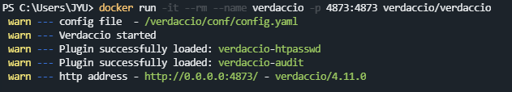
當有在瀏覽器上輸入網址進行瀏覽動作時，可以發現當前運行指令終端機準輸出入介面中，輸出了有瀏覽狀態紀錄。
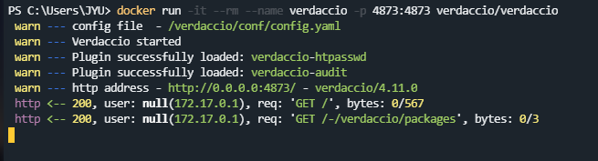
預設執行模式為Foreground，當執行完畢後Container服務就結束，因為有加上--rm所以會清除掉該Container包含屬於內部相關anonymous volumes。
筆者使用環境當然是需要讓服務常駐在背景運作，也就是在Detached模式運作，需要更改指令參數配置
docker run --name verdaccio -p 4873:4873 -v F:\verdaccio\storage:/verdaccio/storage --restart always -d verdaccio/verdaccio
-v 將Container內部VOLUME(/verdaccio/storage)與本機指定實體位址做掛載。--restart always 設置不管在什麼情況下導致Container退出，都強制讓Container服務重新啟動運作。-d 指定將Container服務常駐運作在背景中。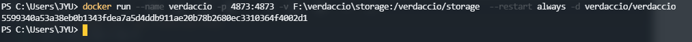
運行下列指令確認Container服務狀態
docker ps -a
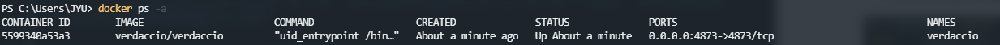
可以觀察到在STATUS是Up About a minute，代表Container服務正常運作中。
在瀏覽器上輸入http://127.0.0.1:4873/進行瀏覽可以看到Server首頁。
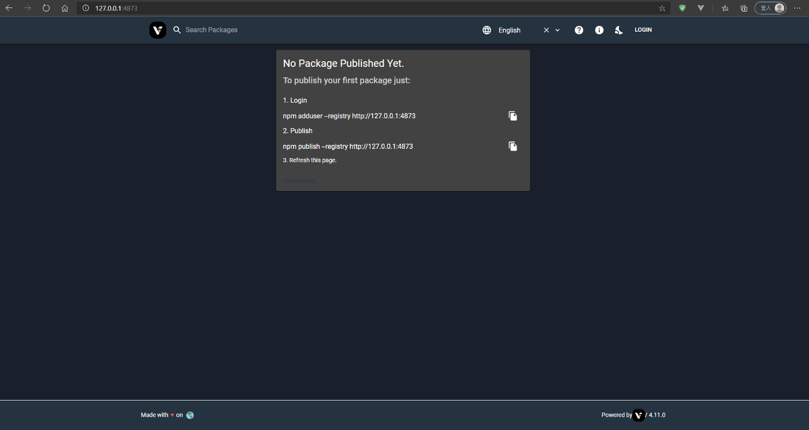
npm adduser --registry http://127.0.0.1:4873
npm login --registry http://127.0.0.1:4873
npm logout --registry http://127.0.0.1:4873
npm whoami --registry http://127.0.0.1:4873
npm publish --registry http://127.0.0.1:4873
npm unpublish PackageName --force --registry http://127.0.0.1:4873
參考格式: npm unpublish [<@scope>/]<pkg> --force
npm install PackageName --registry http://127.0.0.1:4873
在自訂位置底下建立一個資料夾名為HelloTest，並在該目錄底下執行下面操作
package.json
npm init
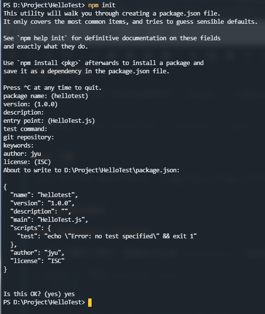
HelloTest.js，並貼上以下內容
function Helloworld() {
console.log("Helloworld");
}
module.exports = Helloworld;
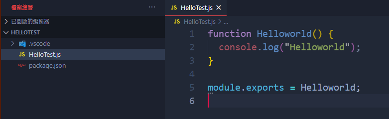
npm adduser --registry http://127.0.0.1:4873
出現輸入User帳號、密碼與信箱登入，輸入完畢都正確後即登入成功。
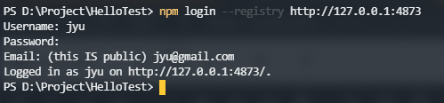
確認目前在NPM Server上登入User身份
npm whoami --registry http://127.0.0.1:4873
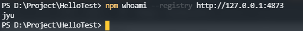
npm publish --registry http://127.0.0.1:4873
NPM Package 名稱為當前目錄名稱，在上一個步驟中建立名為HelloTest目錄，並且在裡面建置Package內容檔案。
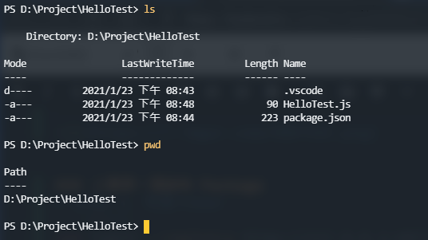
執行上傳完畢後，可以在NPM Server頁面中看到上傳的Package，名稱就如筆者所建立目錄名稱HelloTest。
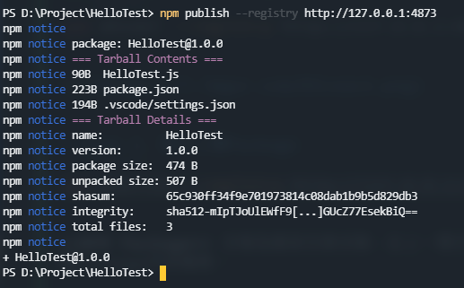
npm logout --registry http://127.0.0.1:4873
建立一個放置Package Web目錄。
hellotest套件
npm install hellotest --registry http://127.0.0.1:4873
下載完成後，Package會放置在該目錄底下node_modules/。
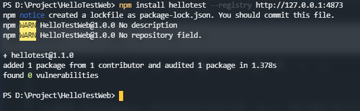
test.html
放置以下內容
<script src="./node_modules/hellotest/HelloTest.js"></script> <script type="text/javascript">
Helloworld();
</script>
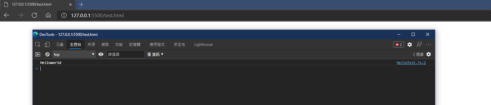
可以看到在上方準備Sample Package步驟中建立測試Function輸出Helloworld結果。
npm unpublish hellotest --force --registry http://127.0.0.1:4873
如果想再重新發佈相同套件，須注意在package.json內參數version版本號不能重複存在Server中，需要再重新設定新的版本號，並且在Server上未存在過該版本號紀錄，否則會被Server擋下來並且警告有相同版本號紀錄已存在問題。